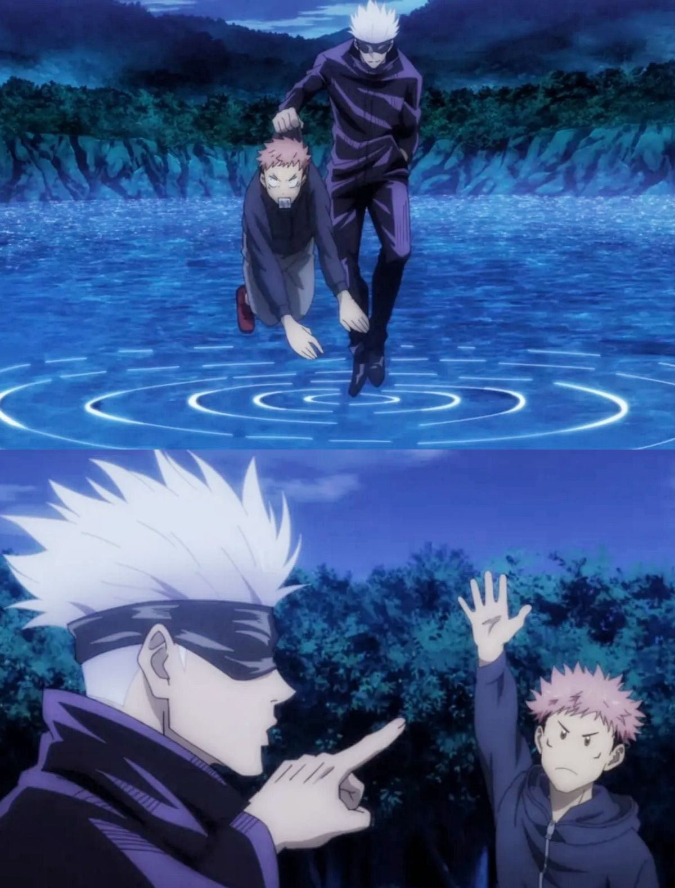
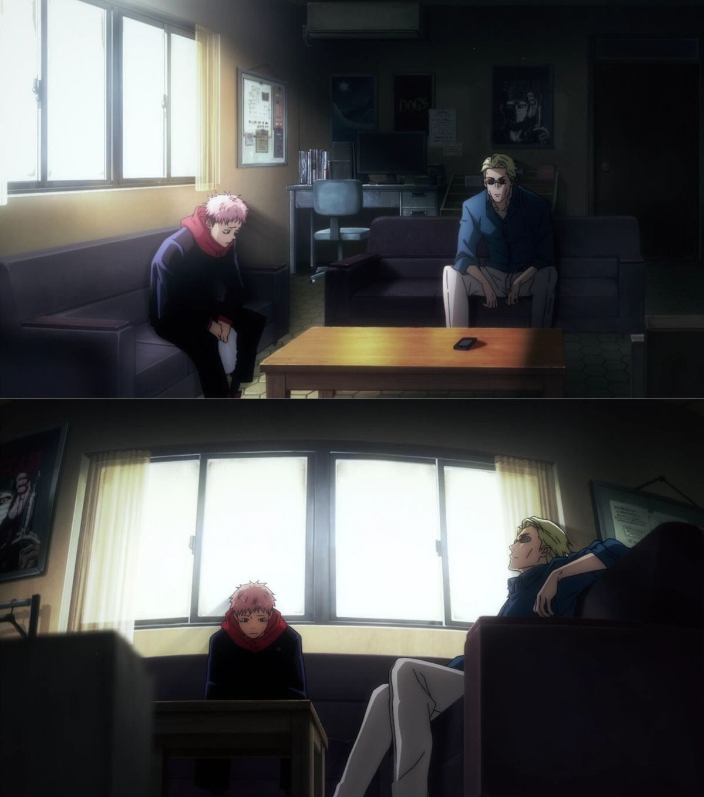

Gojo, Nanami, Yaga trong Jujutsu Kaisen không chỉ là ba nhân vật có aura mạnh. Nếu nhìn qua lens instructional design, họ giống ba vai khác nhau trong một hệ sinh thái đào tạo: người mở cửa, người đi cạnh, và người đứng sau giữ cho hệ thống chưa sập.
Trước khi bắt đầu, tôi xin giải thích rất nhanh cho những ai chưa từng xem Jujutsu Kaisen và đang tự hỏi vì sao mình bấm vào một bài về L&D, nhưng lại gặp ngay một anh tóc trắng bịt mắt, đẹp trai một cách hơi thiếu trách nhiệm.
Jujutsu Kaisen là một thế giới nơi cảm xúc tiêu cực của con người có thể tích tụ thành lời nguyền. Đại loại là, bạn stress vì deadline, buồn vì tình yêu, cay vì bị khách hàng sửa brief lần thứ bảy, và đâu đó trong vũ trụ JJK, những năng lượng đó có thể biến thành một con quái vật thật sự. Nghe rất hợp lý, nếu bạn từng làm việc nhóm.
Để xử lý mớ hỗn loạn đó, thế giới này có một lực lượng gọi là chú thuật sư. Họ không chỉ học đánh nhau, họ học cách đọc tình huống, kiểm soát năng lượng, ra quyết định dưới áp lực, sống sót trong môi trường có khả năng giết mình, và quan trọng nhất là không phát điên khi hệ thống xung quanh mình vốn đã hơi phát điên.
Nói ngắn gọn, JJK có trường học, có thầy cô, có học viên mới, có thực tập hiện trường, có mentor, có lãnh đạo cấp cao, có rủi ro nghề nghiệp, có chính trị tổ chức, và có những buổi đào tạo thực chiến mà nếu đưa vào doanh nghiệp thật thì phòng pháp chế sẽ ngất tại chỗ.
Vì vậy, trong bài này, ta sẽ tạm coi thế giới chú thuật như một môi trường training cực đoan, không phải kiểu training ngồi phòng lạnh, bật slide, cuối buổi điền form phản hồi “nội dung hữu ích, giảng viên nhiệt tình”, mà là training trong một nơi mà bài kiểm tra đầu ra đôi khi là: em còn sống không?
Từ môi trường rất hỗn loạn đó, Jujutsu Kaisen lại đưa ra một quan sát khá sắc về đào tạo: một người học không phát triển nhờ một người thầy hoàn hảo, người học phát triển nhờ được đặt vào đúng hệ sinh thái đào tạo, gặp đúng kiểu người hướng dẫn ở đúng thời điểm.
Với Itadori Yuji, hệ sinh thái đó có ba cái tên: Gojo, Nanami và Yaga.
Itadori Yuji không có một người thầy, nghe hơi sai, vì ai xem Jujutsu Kaisen cũng nhớ Gojo Satoru đứng đó, tóc trắng, bịt mắt, đẹp trai một cách hơi thiếu trách nhiệm, và hành xử như thể mọi quy định trong thế giới chú thuật chỉ là gợi ý tham khảo.
Nhìn kỹ hơn, Gojo không phải toàn bộ hành trình học tập của Itadori, Gojo chỉ là người mở cửa. Sau cánh cửa đó, Itadori cần Nanami để hiểu công việc này không chỉ là đánh nhau cho ngầu, và phía sau tất cả, cậu cần Yaga, người tạo ra điều kiện để cậu được sống, được học, và được trở thành một phần của hệ thống.
Nói cách khác, JJK không viết một câu chuyện về “người thầy vĩ đại”, nó viết về một hệ sinh thái đào tạo, nơi một người ném học viên vào trải nghiệm, một người đi cạnh học viên khi trải nghiệm bắt đầu đau, và một người đứng sau giữ cho cả hệ thống chưa sập.
Nếu bỏ lớp anime, lời nguyền, domain expansion ra ngoài, đây chính là điều rất nhiều chương trình L&D ngoài đời vẫn đang làm sai, họ bắt một người trainer phải vừa là Gojo, vừa là Nanami, vừa là Yaga, để rồi trainer kiệt sức, học viên hoang mang, còn tổ chức thì tưởng mình đã “đào tạo xong” chỉ vì có một buổi workshop rất đẹp slide.
Gojo Satoru là kiểu người thầy mà nếu đưa vào doanh nghiệp thật, phòng HR sẽ vừa mê vừa sợ. Mê vì ông tạo ra trải nghiệm học tập không thể quên, sợ vì phương pháp của ông nhìn từ xa rất giống “ném người mới xuống nước rồi đứng trên bờ cười”.

Gojo biết phong cách của mình không đủ cho giai đoạn tiếp theo, và ông chủ động chuyển giao Itadori cho Nanami. Đây là một quyết định sư phạm rất tỉnh, vì đào tạo không phải chuyện giữ học viên trong vùng ảnh hưởng cá nhân, mà là đặt người học vào đúng điều kiện để phát triển.
Nếu Gojo là người kéo rèm sân khấu và nói “nhìn đi, thế giới thật đây”, thì Nanami là người đứng cạnh bạn sau đó và nói: “Được rồi, bây giờ đừng chết vì thiếu quy trình”. Nanami không có năng lượng của một diễn giả truyền cảm hứng, ông bước vào với vẻ mặt của một người đã đi làm đủ lâu để biết thế giới không thay đổi chỉ vì bạn có thái độ tích cực.

“Không ai hiểu công việc thực tế hơn chính người đang làm công việc đó, kể cả các chuyên gia training chuyên nghiệp từ bên ngoài. Nanami biết điều này, vì ông đã từng là người từ bên ngoài nhìn vào.”
Fieldnotes on Learning · JJK × Instructional Design Fieldnotes on Learning · JJK × Instructional DesignYaga Masamichi là kiểu nhân vật mà người xem dễ lướt qua, vì ông không tóc trắng phát sáng như Gojo, không có khí chất nhân viên văn phòng đã nhìn thấu hồng trần như Nanami, và cũng không xuất hiện quá nhiều trong hành trình trực tiếp của Itadori. Dù vậy, nếu bỏ Yaga ra khỏi hệ thống, rất nhiều thứ sẽ không thể bắt đầu.
Gojo, Nanami và Yaga không phải ba lựa chọn cạnh tranh nhau, họ là ba tầng cần thiết của một hệ thống đào tạo thật sự hoạt động. Gojo là tầng trải nghiệm, người mở biên độ và tạo cú va chạm; Nanami là tầng đồng hành, người biến cú va chạm đó thành năng lực; Yaga là tầng hệ thống, người tạo ra điều kiện để cả quá trình không chỉ phụ thuộc vào may mắn hay lòng tốt cá nhân.
Điều JJK làm hay hơn nhiều giáo trình L&D là nó không giả vờ một người có thể đảm nhận cả ba vai. Gojo không cố làm Nanami, Nanami không cố làm Yaga, Yaga không cần ra tiền tuyến để chứng minh mình quan trọng, và mỗi người hiểu vai của mình trong hành trình phát triển của người học. Một hệ thống đào tạo tốt không cần một siêu nhân làm tất cả, nó cần đúng người, đúng vai, đúng thời điểm.